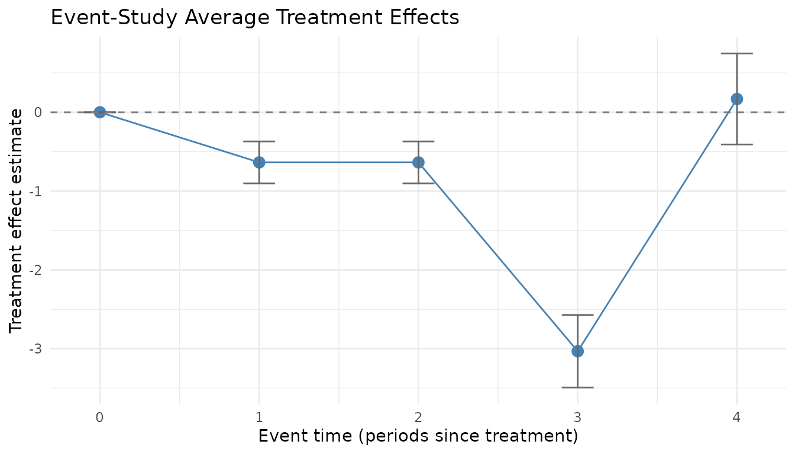
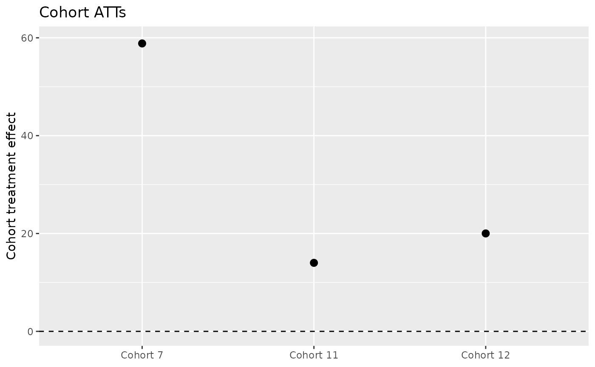

fetwfe: A Package for Fused Extended Two-Way Fixed Effects
Gregory Faletto
2026-07-24
Source:vignettes/fetwfe.Rmd
fetwfe.RmdIntroduction
If you understand the basic idea of what difference-in-differences
with staggered adoptions is, all you need to know about fused extended
two-way fixed effects (FETWFE) to get started using the
fetwfe package is this: given an appropriately formatted
panel data set, fetwfe() will give you an estimate of the
overall average treatment effect on the treated units, the average
treatment effect within each cohort, and standard errors for each of
these estimates.
Feel free to skip to the “Package Usage” section if you want to jump right in to using the package. In the next “Background” subsection, you can read a little more background information on the methodology if you’d like.
Background
This vignette is written under the assumption that you’re at least vaguely familiar with developments in difference-in-differences with staggered adoptions since about 2018. Just to make sure we’re on the same page, the brief recap is:
- Historically, under staggered adoptions researchers used the standard two-way fixed effects estimator and interpreted the coefficient on the treatment dummy as an average treatment effect on the treated units.
- In the late 2010s, econometricians formally checked what this estimator was doing and found that in fact, this coefficient was not any kind of reasonable average treatment effect estimator.
- Since then, a number of new difference-in-differences estimators that are asymptotically unbiased under staggered adoptions have been developed.
The estimator in this package, fused extended two-way fixed effects (FETWFE), is one of those asymptotically unbiased estimators. Of course, I made this estimator because I think FETWFE brings something to the table that the others don’t. Here’s a brief summary on that:
One issue with these estimators has been that they’ve worked so hard to be unbiased that they are inefficient (in the language of econometrics), or high-variance (in the language of machine learning). These estimators add extra parameters in order to remove bias, but estimating extra parameters means you have less data per parameter and your estimates are noisier.
In machine learning, creating a more flexible estimator with lots of parameters and then finding that it is too high variance (that is, it overfits) is a familiar issue. The most common solution has been regularization.
You could just add or regularization to a difference-in-differences regression estimator and probably see an improvement in your efficiency, but FETWFE does something more sophisticated than that. (Plus, that approach wouldn’t allow you to get valid standard errors for your treatment effect estimates, but FETWFE does.) Qualitatively, FETWFE uses machine learning to learn which of these added parameters were actually unnecessary to add, and then takes them back out in order to improve efficiency.
That’s all the description I’ll give you in this vignette. You can learn all of the details in the paper on arXiv:
Fused Extended Two-Way Fixed Effects for Difference-in-Differences With Staggered Adoptions
If you want to learn a little more before you dive into the full paper, here are some other resources with descriptions of the methodology that provide a little more detail than this vignette:
- My blog post announcing the paper.
- Some slides I made for a presentation on FETWFE.
- Another blog post focused on what this package is doing under the hood.
But the headline summary of what fused extended two-way fixed effects brings to the table in a crowded field of estimators is: fused extended two-way fixed effects is not only unbiased, it also uses machine learning to maximize efficiency (minimize variance). Further, unlike many machine learning estimators, fused extended two-way fixed effects gives you valid standard errors for the treatment effect estimates.
Package Usage
The package provides a single exported function,
fetwfe(), which implements the FETWFE estimator. Its
primary arguments include:
-
pdata: A data frame in panel (long) format. -
time_var: A character string specifying the name of the time period variable. -
unit_var: A character string specifying the unit (e.g. state, firm) variable. -
treatment: A character string specifying the treatment indicator variable (which must be an absorbing binary indicator). -
response: A character string specifying the response (outcome) variable. -
covs: A character vector of covariate names (typically time-invariant or the pre-treatment values), if applicable. -
Additional tuning parameters: such as the tuning
parameter for the bridge penalty (controlled via argument
q), the geometry of the fusion penalty (fusion_structure, either the default"cohort"or"event_study", or a fully customfusion_matrix), and options for verbosity, standard error calculation, and so on.
The function returns a list containing, for example, the estimated overall average treatment effect, cohort-specific treatment effects, standard errors (when available), and various diagnostic quantities.
You can get the full documentation details by using
?fetwfe in R when you have the package loaded.
The workflow in three moves. Working with a fit comes down to:
-
Fit — call
fetwfe()on your panel. -
Extract — pull out the treatment effects by the
view you want:
cohortStudy()(per adoption cohort),eventStudy()(per time since treatment), orcohortTimeATTs()(the fully disaggregated cohort-by-time cells); the overall ATT is on the fit asatt_hat/att_se. -
Plot — visualize them with
plot(fit, type = "event_study")orplot(fit, type = "catt").
The rest of this vignette expands on each of these.
For a detailed discussion of how the package’s standard errors are
computed, the assumptions they rely on, and an experimental
cluster-robust option (se_type = "cluster") suitable as a
sensitivity check, see the companion vignette
inference_vignette. Two further companion vignettes cover
family-wise simultaneous confidence bands
(simultaneousCIs()) and the selection-consistency
zero-effect test (simultaneous_cis_vignette), and
high-dimensional debiased inference via debiasedATT()
(high_dimensional_vignette).
In the next sections, we’ll walk through examples of how
fetwfe() is used.
Simulated Data Example
I’ll start illustrating how to use fetwfe() by using a
simulated data set. The example below simulates a balanced panel with 20
time periods and 30 individuals. Each individual is assigned at random
to one of five cohort levels; with the randomly drawn treatment timing,
three of those levels resolve to cohorts that are actually treated
within the panel window and the rest are never treated.
In the simulation, each individual is assigned a random cohort (which determines the timing of treatment) and three time-invariant covariates are generated. The response variable is constructed so that, after treatment, its evolution depends on a treatment effect (which varies by cohort) and a linear trend, plus the covariates and some random noise.
Below is the complete code for simulating the data, converting it
into the required pdata format, and running the fetwfe()
function.
I borrowed some of the below code from Asjad Naqvi’s helpful website for DiD estimators. Thanks for sharing the code publicly!
# Set seed for reproducibility
set.seed(123456L)
# 20 time periods, 30 individuals, and 5 cohort levels
tmax = 20; imax = 30; nlvls = 5
dat =
expand.grid(time = 1:tmax, id = 1:imax) |>
within({
cohort = NA
effect = NA
first_treat = NA
cov1 = NA
cov2 = NA
cov3 = NA
for (chrt in 1:imax) {
cohort = ifelse(id==chrt, sample.int(nlvls, 1), cohort)
}
for (lvls in 1:nlvls) {
effect = ifelse(cohort==lvls, sample(2:10, 1), effect)
first_treat = ifelse(cohort==lvls, sample(1:(tmax+6), 1), first_treat)
}
# three time-invariant covariates: one value per individual,
# drawn AFTER the timing loop so first_treat is unchanged
for (chrt in 1:imax) {
cov1 = ifelse(id==chrt, rnorm(1), cov1)
cov2 = ifelse(id==chrt, rnorm(1), cov2)
cov3 = ifelse(id==chrt, rnorm(1), cov3)
}
first_treat = ifelse(first_treat>tmax, Inf, first_treat)
treat = time >= first_treat
rel_time = time - first_treat
y = id + time + ifelse(treat, effect*rel_time, 0) +
0.5*cov1 - 0.7*cov2 + 1.2*cov3 + rnorm(imax*tmax)
rm(chrt, lvls, cohort, effect)
})
head(dat)## time id y rel_time treat cov3 cov2 cov1 first_treat
## 1 1 1 1.3403587 -Inf FALSE -0.5019485 0.1582893 -0.8962503 Inf
## 2 2 1 0.2842639 -Inf FALSE -0.5019485 0.1582893 -0.8962503 Inf
## 3 3 1 3.7222320 -Inf FALSE -0.5019485 0.1582893 -0.8962503 Inf
## 4 4 1 3.6309664 -Inf FALSE -0.5019485 0.1582893 -0.8962503 Inf
## 5 5 1 6.6701082 -Inf FALSE -0.5019485 0.1582893 -0.8962503 Inf
## 6 6 1 6.0159986 -Inf FALSE -0.5019485 0.1582893 -0.8962503 InfThe simulated data (dat) now has columns for time, id, a
treatment indicator (treat), three time-invariant
covariates (cov1, cov2, cov3),
and a response variable (y). Next, we convert this data
into the panel data format required by fetwfe().
library(dplyr)
# Specify column names for the pdata format
time_var <- "time" # Column for the time period
unit_var <- "unit" # Column for the unit identifier
treatment <- "treated" # Column for the treatment dummy indicator
response <- "response" # Column for the response variable
# Convert the dataset
pdata <- dat |>
mutate(
# Rename id to unit and convert to character
{{ unit_var }} := as.character(id),
# Ensure treatment dummy is 0/1
{{ treatment }} := as.integer(treat),
# Rename y to response
{{ response }} := y
) |>
select(
{{ time_var }}, {{ unit_var }}, {{ treatment }}, {{ response }},
cov1, cov2, cov3
)
# Preview the resulting pdata dataframe
head(pdata)## time unit treated response cov1 cov2 cov3
## 1 1 1 0 1.3403587 -0.8962503 0.1582893 -0.5019485
## 2 2 1 0 0.2842639 -0.8962503 0.1582893 -0.5019485
## 3 3 1 0 3.7222320 -0.8962503 0.1582893 -0.5019485
## 4 4 1 0 3.6309664 -0.8962503 0.1582893 -0.5019485
## 5 5 1 0 6.6701082 -0.8962503 0.1582893 -0.5019485
## 6 6 1 0 6.0159986 -0.8962503 0.1582893 -0.5019485Now that pdata is properly formatted, we run the FETWFE
estimator on the simulated data.
library(fetwfe)
# Run the FETWFE estimator on the simulated data
result <- fetwfe(
pdata = pdata, # The panel dataset
time_var = "time", # The time variable
unit_var = "unit", # The unit identifier
treatment = "treated", # The treatment dummy indicator
response = "response", # The response variable
covs = c("cov1", "cov2", "cov3") # The time-invariant covariates
)
# Display the average treatment effect estimates
summary(result)## Summary of Fused Extended Two-Way Fixed Effects
## ================================================
##
## Overall ATT: 30.4626 (SE = 4.1889, p = 3.535e-13, 95% CI = [22.2525, 38.6726])
## Selected: TRUE
##
## CATT (preview) [simultaneous 95% CI]:
## cohort estimate se ci_low ci_high p_value selected
## 7 58.84753 0.2165463 58.33381 59.36124 0 TRUE
## 11 14.00563 0.2344958 13.44934 14.56193 0 TRUE
## 12 20.01437 0.1830776 19.58006 20.44869 0 TRUE
##
## Event Study (preview) [simultaneous 95% CI]:
## event_time n_cohorts estimate se ci_low ci_high p_value
## 0 3 1.283027 0.2459480 0.6170528 1.949000 1.303408e-06
## 1 3 6.396242 0.5106127 5.0136135 7.778871 0.000000e+00
## 2 3 11.291839 0.9463132 8.7294283 13.854250 0.000000e+00
## 3 3 18.229410 1.4991523 14.1700307 22.288790 0.000000e+00
## 4 3 23.403446 2.0417170 17.8749187 28.931973 0.000000e+00
## 5 3 29.525165 2.7279717 22.1384088 36.911921 0.000000e+00
## 6 3 33.886714 2.9253379 25.9655329 41.807895 0.000000e+00
## 7 3 39.974990 3.6601035 30.0642229 49.885757 0.000000e+00
## 8 3 46.988747 4.0877163 35.9200972 58.057397 0.000000e+00
## 9 2 60.016166 8.2868965 37.5770456 82.455286 2.591150e-12
## 10 1 89.791179 0.5431113 88.3205512 91.261806 0.000000e+00
## 11 1 98.188340 0.5431113 96.7177126 99.658968 0.000000e+00
## 12 1 107.809727 0.4963810 106.4656349 109.153819 0.000000e+00
## 13 1 118.370341 0.4963810 117.0262492 119.714434 0.000000e+00
## 14 0 0.000000 NA NA NA NA
## 15 0 0.000000 NA NA NA NA
## 16 0 0.000000 NA NA NA NA
## 17 0 0.000000 NA NA NA NA
## 18 0 0.000000 NA NA NA NA
##
## Model Details:
## Units (N) : 30
## Time periods (T) : 20
## Treated cohorts (G) : 3
## Covariates (d) : 3
## Features (p) : 223
## Selected size : 42
## Lambda* : 0.0309When you run this code, the function internally performs all the
necessary data preparation, applies the fusion penalty via a bridge
regression (using the grpreg package), and returns a list
with overall and cohort-specific treatment effect estimates, standard
errors (if available), and additional diagnostics.
By default the fusion penalty uses the within-/between-cohort
structure, but you can instead fuse treatment effects by event time
(time since treatment) with
fusion_structure = "event_study", or supply a fully custom
fusion matrix. For when to prefer each, see the vignette “Choosing a fusion structure:
cohort vs. event-study penalties”
(vignette("fusion_structure_vignette", package = "fetwfe")).
A “Real Data” Example
Next I illustrate FETWFE in an empirical context. I’ll use the
divorce data set from the bacondecomp package,
which comes from the study by Stevenson and Wolfers (2006) of unilateral
(“no-fault”) divorce laws and female suicide rates. It is a balanced
state-year panel covering 51 states over 1964-1996, with the reforms
adopted in a staggered, scattered fashion across states. This is the
empirical application in Section 8.2 of Faletto (2025).
library(bacondecomp) # for the example data
# Load the data and restrict to the female subset (`sex == 2`), the sample
# analyzed by Stevenson and Wolfers (2006).
data(divorce)
divorce_f <- divorce[divorce$sex == 2, ]
# - 'year' is the time period, 'st' is the unit (state) identifier;
# - 'changed' is already an absorbing 0/1 divorce-reform indicator;
# - 'suiciderate_elast_jag' is the elasticity-scaled female suicide rate.
# Three covariates enter as controls. fetwfe() automatically drops the 9 states
# already treated by 1964 (first-period-treated) and `murderrate` (missing in
# 1964 for one state); both are reported as warnings, suppressed here for
# brevity. The noise variances are supplied (precomputed by REML) to keep the
# call fast.
res <- suppressWarnings(fetwfe(
pdata = divorce_f,
time_var = "year",
unit_var = "st",
treatment = "changed",
covs = c("murderrate", "lnpersinc", "afdcrolls"),
response = "suiciderate_elast_jag",
sig_eps_sq = 0.0344,
sig_eps_c_sq = 0.1507,
add_ridge = TRUE,
q = 0.5
))
summary(res)## Summary of Fused Extended Two-Way Fixed Effects
## ================================================
##
## Overall ATT: -0.0602 (SE = 0.0188, p = 0.001376, 95% CI = [-0.0970, -0.0233])
## Selected: TRUE
##
## CATT (preview) [simultaneous 95% CI]:
## cohort estimate se ci_low ci_high p_value selected
## 1969 0.00000000 0.000000000 0.000000000 0.000000000 NA FALSE
## 1970 -0.44401171 0.046498180 -0.572555501 -0.315467911 0.000000e+00 TRUE
## 1971 -0.02633974 0.020112012 -0.081939211 0.029259735 8.474215e-01 TRUE
## 1972 -0.01611957 0.009359074 -0.041992646 0.009753503 5.468636e-01 TRUE
## 1973 -0.06452464 0.013062067 -0.100634602 -0.028414670 7.037395e-06 TRUE
## 1974 -0.03001991 0.012978739 -0.065899516 0.005859696 1.707508e-01 TRUE
## 1975 0.00000000 0.000000000 0.000000000 0.000000000 NA FALSE
## 1976 -0.04379642 0.063672429 -0.219818270 0.132225427 9.976219e-01 TRUE
## 1977 -0.12389080 0.024178412 -0.190731799 -0.057049799 2.691903e-06 TRUE
## 1980 -0.04013226 0.061547270 -0.210279123 0.130014613 9.984244e-01 TRUE
## 1984 0.00000000 0.000000000 0.000000000 0.000000000 NA FALSE
## 1985 0.14972560 0.050875421 0.009080967 0.290370243 2.880518e-02 TRUE
##
## Event Study (preview) [simultaneous 95% CI]:
## event_time n_cohorts estimate se ci_low ci_high
## 0 12 0.000000000 0.000000000 0.00000000 0.000000000
## 1 12 0.007021230 0.008967259 -0.01711252 0.031154980
## 2 12 0.007021230 0.008967259 -0.01711252 0.031154980
## 3 12 -0.002432030 0.012215187 -0.03530699 0.030442926
## 4 12 -0.003617641 0.011148464 -0.03362171 0.026386424
## 5 12 -0.003617641 0.011148464 -0.03362171 0.026386424
## 6 12 -0.011132396 0.014720658 -0.05075037 0.028485581
## 7 12 -0.021202910 0.015683174 -0.06341132 0.021005503
## 8 12 -0.037944910 0.018119407 -0.08671000 0.010820183
## 9 12 -0.037944910 0.018119407 -0.08671000 0.010820183
## 10 12 -0.074506291 0.024798078 -0.14124581 -0.007766769
## 11 12 -0.074506291 0.024798078 -0.14124581 -0.007766769
## 12 11 -0.082814477 0.023894781 -0.14712294 -0.018506015
## 13 10 -0.085180605 0.024460058 -0.15101041 -0.019350801
## 14 10 -0.085180605 0.024460058 -0.15101041 -0.019350801
## 15 10 -0.088610436 0.024705385 -0.15510049 -0.022120380
## 16 10 -0.088610436 0.024705385 -0.15510049 -0.022120380
## 17 9 -0.116556469 0.025754859 -0.18587099 -0.047241944
## 18 9 -0.116556469 0.025754859 -0.18587099 -0.047241944
## 19 9 -0.126407960 0.030867474 -0.20948216 -0.043333761
## p_value
## NA
## 9.599013e-01
## 9.598298e-01
## 9.999999e-01
## 9.999595e-01
## 9.999596e-01
## 9.668442e-01
## 6.427008e-01
## 1.978968e-01
## 1.982691e-01
## 2.050725e-02
## 2.005599e-02
## 4.372433e-03
## 4.043219e-03
## 3.968237e-03
## 2.954746e-03
## 2.922874e-03
## 4.681714e-05
## 5.298056e-05
## 4.386078e-04
## ... + 12 more event times.
##
## Model Details:
## Units (N) : 42
## Time periods (T) : 33
## Treated cohorts (G) : 12
## Covariates (d) : 2
## Features (p) : 908
## Selected size : 38
## Lambda* : 0.0004
# Average treatment effect on the treated units (in percentage point units)
100 * res$att_hat## [1] -6.017477
# 95% confidence interval for ATT (in percentage point units)
low_att <- 100 * (res$att_hat - qnorm(1 - 0.05 / 2) * res$att_se)
high_att <- 100 * (res$att_hat + qnorm(1 - 0.05 / 2) * res$att_se)
c(low_att, high_att)## [1] -9.703624 -2.331330
# Cohort average treatment effects and confidence intervals (in percentage
# point units). Several cohorts are pruned to exactly zero by the selection.
catt_df_pct <- res$catt_df
catt_df_pct[["estimate"]] <- 100 * catt_df_pct[["estimate"]]
catt_df_pct[["se"]] <- 100 * catt_df_pct[["se"]]
catt_df_pct[["ci_low"]] <- 100 * catt_df_pct[["ci_low"]]
catt_df_pct[["ci_high"]] <- 100 * catt_df_pct[["ci_high"]]
catt_df_pct## cohort estimate se ci_low ci_high p_value selected
## 1 1969 0.000000 0.0000000 0.0000000 0.0000000 NA FALSE
## 2 1970 -44.401171 4.6498180 -57.2555501 -31.5467911 0.000000e+00 TRUE
## 3 1971 -2.633974 2.0112012 -8.1939211 2.9259735 8.474215e-01 TRUE
## 4 1972 -1.611957 0.9359074 -4.1992646 0.9753503 5.468636e-01 TRUE
## 5 1973 -6.452464 1.3062067 -10.0634602 -2.8414670 7.037395e-06 TRUE
## 6 1974 -3.001991 1.2978739 -6.5899516 0.5859696 1.707508e-01 TRUE
## 7 1975 0.000000 0.0000000 0.0000000 0.0000000 NA FALSE
## 8 1976 -4.379642 6.3672429 -21.9818270 13.2225427 9.976219e-01 TRUE
## 9 1977 -12.389080 2.4178412 -19.0731799 -5.7049799 2.691903e-06 TRUE
## 10 1980 -4.013226 6.1547270 -21.0279123 13.0014613 9.984244e-01 TRUE
## 11 1984 0.000000 0.0000000 0.0000000 0.0000000 NA FALSE
## 12 1985 14.972560 5.0875421 0.9080967 29.0370243 2.880518e-02 TRUEFETWFE estimates that adopting a unilateral divorce law is associated
with roughly a -6% change in the elasticity-scaled female suicide rate,
with a 95% confidence interval that excludes zero. The sign and order of
magnitude match Stevenson and Wolfers (2006), who found that these
reforms reduced female suicide. Unlike a fully fused fit, FETWFE’s
selection step retains heterogeneous cohort effects here:
several adoption cohorts are pruned to exactly zero while the rest carry
nonzero, varying estimates, so the rows of res$catt_df are
no longer all identical.
Unlike the simulated example above, this fit includes covariates (the
covs argument). Because FETWFE regularizes the
cohort-interacted design through its bridge penalty, it accommodates
covariates even on this panel’s scattered, single-state adoption cohorts
– a setting in which an unregularized two-way fixed effects fit would be
rank-deficient.
Testing the zero-effect null
Empirical users of difference-in-differences routinely want to ask
“is this treatment effect statistically distinguishable from zero?”. The
confidence intervals in catt_df answer that implicitly — a
CI that excludes 0 corresponds to rejecting H_0: tau = 0 at
level alpha (family-wise across cohorts under the default
simultaneous bands). The package also surfaces a per-cohort
p_value that matches whichever interval is displayed: under
the default ci_type = "simultaneous" it is the single-step
max-T multiplicity-adjusted p-value (the exact dual of the simultaneous
band, so the CI-excludes-0 test and p_value < alpha
always agree; version 1.18.0), and under
ci_type = "pointwise" the two-sided Wald
2 * pnorm(-|estimate / se|). The overall-ATT
att_p_value is the scalar Wald p-value (a single effect, no
multiplicity). For fetwfe() and betwfe() there
is also a selected logical flag, both at the overall ATT
level and per-cohort.
For fetwfe(), the selected flag carries
something stronger than the usual CI test. Under the restriction
selection consistency theorem (Theorem 6.2 in the paper), when the true
tau_ATT(g, t) = 0, the estimator returns exactly 0
with probability tending to 1. The package’s interpretation: when
selected = FALSE for a cohort, the asymptotic conclusion is
that the truth is zero — a strictly stronger statement than what a
standard CI provides. The package surfaces this as an asymptotic
100% confidence interval of {0} for selected-out
cohorts. For selected-out cohorts, p_value is reported as
NA — the inferential content lives in
selected.
set.seed(2026)
sim <- genCoefs(G = 3, T = 6, d = 2, density = 0.5, eff_size = 2)
# sim was built without a seed, so draw from the ambient generator (seeded
# just above); seed = NA selects the ambient generator silently.
dat <- simulateData(sim, N = 120, sig_eps_sq = 1, sig_eps_c_sq = 0.5, seed = NA)
res_demo <- fetwfeWithSimulatedData(dat, verbose = FALSE)
res_demo$catt_df## cohort estimate se ci_low ci_high p_value selected
## 1 2 -0.4137526 0.07754859 -0.586916 -0.2405893 1.906689e-07 TRUE
## 2 3 -1.6817852 0.12781952 -1.967202 -1.3963687 0.000000e+00 TRUE
## 3 4 0.0000000 0.00000000 0.000000 0.0000000 NA FALSEbetwfe() uses bridge regression directly on the
coefficients (rather than on the fused restrictions used by
fetwfe()). Under the bridge oracle property of Kock (2013),
selected = FALSE for betwfe() is an analogous
asymptotic statement that the truth is zero, under a sparsity assumption
different from the one Theorem 6.2 establishes for
fetwfe(). For etwfe() and
twfeCovs(), neither has a selection step, so the
selected column is omitted; the p_value column
is a standard post-OLS t-test.
It is worth keeping in mind that the asymptotic 100% CI of
{0} interpretation is an N -> infinity
statement. In small samples, it may be wise to read
selected and p_value together rather than
relying on either alone. In particular, even when
selected = TRUE, the standard CI may cover zero — the
selection step says “the truth is nonzero” but the magnitude CI says
“could be zero”.
Per-cohort, per-event-time, and per-(cohort, time) accessors
The per-cohort estimates in res$catt_df are also
reachable through cohortStudy(), a function-style accessor
parallel to eventStudy() for event-time effects. The two
are documented and discoverable in the same way
(?cohortStudy, ?eventStudy), and both return a
data frame that plays nicely with broom::tidy():
cs <- cohortStudy(res_demo)
cs## cohort estimate se ci_low ci_high p_value selected
## 1 2 -0.4137526 0.07754859 -0.586916 -0.2405893 1.906689e-07 TRUE
## 2 3 -1.6817852 0.12781952 -1.967202 -1.3963687 0.000000e+00 TRUE
## 3 4 0.0000000 0.00000000 0.000000 0.0000000 NA FALSE
broom::tidy(cs)## term estimate std.error statistic p.value conf.low conf.high
## 1 cohort_2 -0.4137526 0.07754859 -5.335399 1.906689e-07 -0.586916 -0.2405893
## 2 cohort_3 -1.6817852 0.12781952 -13.157499 0.000000e+00 -1.967202 -1.3963687
## 3 cohort_4 0.0000000 0.00000000 NA NA 0.000000 0.0000000
## selected
## 1 TRUE
## 2 TRUE
## 3 FALSEcohortStudy() is a pass-through on
res$catt_df — same rows, same columns — with one extra S3
class on top ("cohortStudy") that dispatches
tidy() to a broom-shape translator. The
catt_df class underneath is preserved, so the helpful-error
layer on the old Title-Case column names still fires.
For the fully disaggregated effects — one row per
(cohort, time) cell, with no averaging over either axis —
use cohortTimeATTs(). This is the finest-grained view,
sitting below cohortStudy() (which averages each cohort’s
cells over time) and eventStudy() (which averages over
cohorts at each event time):
cta <- cohortTimeATTs(res_demo)
head(cta)## cohort time estimate se ci_low ci_high p_value selected
## 1 2 2 0.0000000 0.0000000 0.0000000 0.0000000 NA FALSE
## 2 2 3 0.0000000 0.0000000 0.0000000 0.0000000 NA FALSE
## 3 2 4 0.0000000 0.0000000 0.0000000 0.0000000 NA FALSE
## 4 2 5 -2.2372560 0.2435678 -2.7146401 -1.7598718 4.101854e-20 TRUE
## 5 2 6 0.1684927 0.2435678 -0.3088914 0.6458769 4.890822e-01 TRUE
## 6 3 3 0.0000000 0.0000000 0.0000000 0.0000000 NA FALSEIts standard errors are the per-cell regression standard errors,
recomputed from the fit exactly as eventStudy() does (each
cell is a single coefficient, so the cohort-probability sampling
variance that contributes to the aggregated SEs is identically zero
here). Confidence intervals and p-values are pointwise; a cell the
fusion penalty zeroed out has estimate = 0,
se = 0, and selected = FALSE.
broom::tidy() works here too
(term = "cohort_<g>_time_<t>"). For
simultaneous (family-wise) bands over the (cohort, time)
cell family, use
simultaneousCIs(res_demo, family = "all_post_treatment").
## term time estimate std.error statistic p.value conf.low
## 1 cohort_2_time_2 2 0.0000000 0.0000000 NA NA 0.0000000
## 2 cohort_2_time_3 3 0.0000000 0.0000000 NA NA 0.0000000
## 3 cohort_2_time_4 4 0.0000000 0.0000000 NA NA 0.0000000
## 4 cohort_2_time_5 5 -2.2372560 0.2435678 -9.1853515 4.101854e-20 -2.7146401
## 5 cohort_2_time_6 6 0.1684927 0.2435678 0.6917693 4.890822e-01 -0.3088914
## 6 cohort_3_time_3 3 0.0000000 0.0000000 NA NA 0.0000000
## conf.high selected
## 1 0.0000000 FALSE
## 2 0.0000000 FALSE
## 3 0.0000000 FALSE
## 4 -1.7598718 TRUE
## 5 0.6458769 TRUE
## 6 0.0000000 FALSEPlotting the effects
The built-in plot() method draws the effects directly —
the event-study view (type = "event_study", the default) or
the per-cohort view (type = "catt"), each with confidence
intervals:
plot(res_demo, type = "event_study")
Reading it: each point is the average treatment effect at a given
number of periods since adoption (the event time), with its
confidence interval. The plot begins at event time 0 (treatment onset)
and traces how the effect evolves over the post-treatment periods —
FETWFE does not estimate pre-treatment placebo coefficients (they are
out of scope; see ?eventStudy), so there is no pre-trends
panel here. Swap in type = "catt" for the
per-adoption-cohort effects, where any cohort the fusion penalty pooled
to zero appears pinned exactly at zero — a visual signature of the
fusion. (The broom route in the next section is the
do-it-yourself alternative when you want full ggplot2
control.)
Tidy outputs with broom
If you use the tidyverse, the fitted object also plays nicely with
the broom package.
tidy() reshapes the overall ATT and per-cohort CATTs into a
long data frame with the standard term /
estimate / std.error / statistic
/ p.value / conf.low / conf.high
columns, plus a selected flag (see “Testing the zero-effect
null” below):
## term estimate std.error statistic p.value conf.low conf.high
## 1 ATT 30.46257 4.1888700 7.272264 3.535113e-13 22.25254 38.67260
## 2 Cohort 7 58.84753 0.2165463 271.754951 0.000000e+00 58.33381 59.36124
## 3 Cohort 11 14.00563 0.2344958 59.726581 0.000000e+00 13.44934 14.56193
## 4 Cohort 12 20.01437 0.1830776 109.321780 0.000000e+00 19.58006 20.44869
## selected
## 1 TRUE
## 2 TRUE
## 3 TRUE
## 4 TRUEglance() returns a one-row model-level summary —
panel-shape counts, the bridge-regression tuning, the variance
components, and the inference settings:
glance(result)## nobs n_units n_periods n_cohorts n_covs n_features lambda_star
## 1 600 30 20 3 3 223 0.03085978
## lambda_star_model_size lambda_selection cv_folds cv_seed sig_eps_sq
## 1 42 cv 10 600 0.9715147
## sig_eps_c_sq alpha se_type indep_counts_used
## 1 90.72021 0.05 default FALSEaugment() appends .fitted and
.resid columns to your panel (auto-aligned to the design
the estimator actually fit on, so the same raw pdata you
handed to fetwfe() works):
## time unit treated response cov1 cov2 cov3 .fitted
## 1 1 1 0 1.3403587 -0.8962503 0.1582893 -0.5019485 37.87288
## 2 2 1 0 0.2842639 -0.8962503 0.1582893 -0.5019485 39.05406
## 3 3 1 0 3.7222320 -0.8962503 0.1582893 -0.5019485 39.71505
## 4 4 1 0 3.6309664 -0.8962503 0.1582893 -0.5019485 40.88863
## 5 5 1 0 6.6701082 -0.8962503 0.1582893 -0.5019485 41.89930
## 6 6 1 0 6.0159986 -0.8962503 0.1582893 -0.5019485 43.22619
## .resid
## 1 -36.53252
## 2 -38.76980
## 3 -35.99282
## 4 -37.25766
## 5 -35.22919
## 6 -37.21019From there, the tidied output goes straight into ggplot2
or modelsummary without needing to read the package’s class
documentation:
library(ggplot2)
tidy_res |>
dplyr::filter(term != "ATT") |>
# Remove non-digits to extract the number, then reorder the factor levels
dplyr::mutate(term = reorder(term, as.numeric(gsub("\\D", "", term)))) |>
ggplot(aes(x = term, y = estimate)) +
geom_pointrange(aes(ymin = conf.low, ymax = conf.high)) +
geom_hline(yintercept = 0, linetype = "dashed") +
labs(x = NULL, y = "Cohort treatment effect", title = "Cohort ATTs")
See the simulation vignette for an example of how you can use functions in the FETWFE package to simulate panel data.
Conclusion
This should be enough to get you started using fetwfe()
on your own data. Please feel free to reach out if you have any
questions or feedback or run into any issues using the package. You can
also create an
issue if you think there’s a bug in the package or you’d like to
request a feature. Thanks so much for checking out the
package!
References
- Cheng, C., & Hoekstra, M. (2013). Does Strengthening Self-Defense Law Deter Crime or Escalate Violence? Evidence from Expansions to Castle Doctrine. Journal of Human Resources, 48(3), 821-854.
- Faletto, G. (2025). Fused Extended Two-Way Fixed Effects for Difference-in-Differences with Staggered Adoptions. arXiv preprint arXiv:2312.05985.
- Flack, E., & Jee, E. (2020). bacondecomp: Goodman-Bacon Decomposition. R package version 0.1.1. https://CRAN.R-project.org/package=bacondecomp.
- Kock, A. B. (2013). Oracle inequalities for high-dimensional nonparametric models. Econometric Theory.